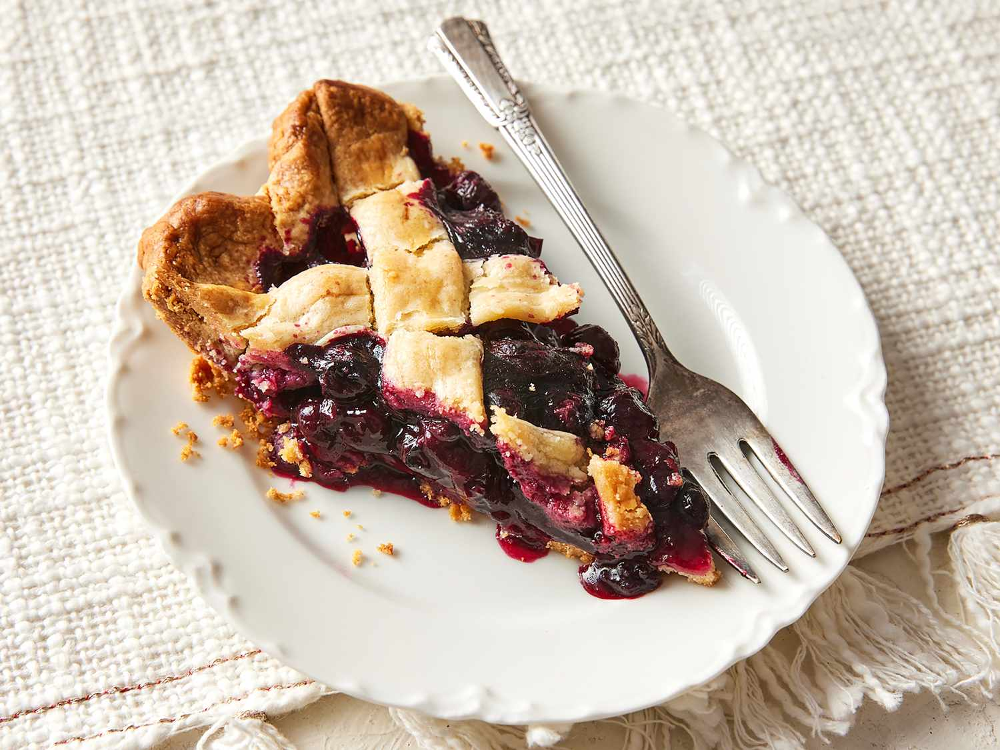

Nesting Raven Pie

A mystical black-berry pie inspired by Huginn and Muninn,
Odin’s two ravens. This dessert is said to enhance memory and
foresight when consumed under the full moon. Its deep, dark co-
-lor and flaky crust hide secrets only the worthy may taste
Ingredients:
- 2 cups enchanted blackberries
- half cup powdered sugar (frosted from Nilfheim'schill
- 1 tbsp raven Feather extract
- 2 cups all-purpose flour
- half tsp salt
Instrustions:
- Preheat the oven to 190*C
- In a large bowl, combine the flour and salt
- Cut in the butter until the mixture resembles coarse crumbs
- Add cold water gradually and knead until dough forms, Chill
in a frost-state chamber
- Roll out the dough and fill with blackberry mixture and feather
extraxt
- fold the dough over, seal it with runes of protection, and carve
a raven sigil on top
- Bake for 40 minutes until golden and slightly darkend at the edges
- Cool under moonlight and serve with mead or fresh goat milk